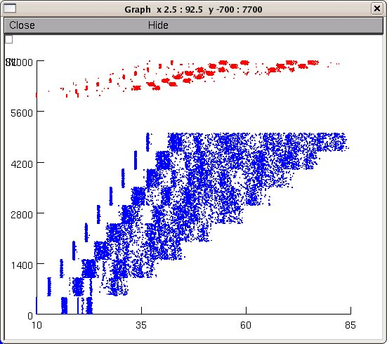

This model replicates Fig. 1b of
Lytton WW; Orman R; Stewart M. Broadening of activity with flow
across neural structures. Perception, 37:401-407, PMID:
18491717. 2008.
runs under Unix/Linux and mswin (updated 20110331)
mostly NOT standard NEURON -- do not use to learn NEURON
To run:
cd b08dec23
nrnivmodl
nrngui mosinit.hoc
and press the recreate button. When the model stops (after about 2
1/4 minutes on a 2.8GHz Pentium 4) a graph similar to figure 1 b from
the paper will be displayed:

Additional use notes:
mknewnet=1
at top of mosinit.hoc -- can switch to 0 if want to run again after
first run to inhibit re-creation of the net.net network connectivity file.
graphics shows excitatory (blue) and inhibitory (red) raster
individual inhibitory (IN) and excitatory (SU) cells from each column
are available from the menu.
This model code was supplied by Bill Lytton.
Changelog
---------
2022-05: Updated MOD files to contain valid C++ and be compatible with the
upcoming versions 8.2 and 9.0 of NEURON.